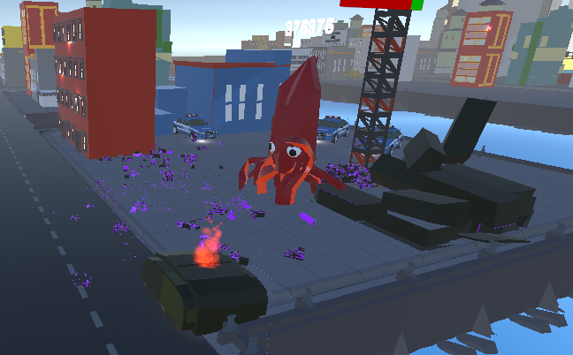

Squidstribution
is a city destruction/god-game hybrid about a kaiju looking for peace and quiet
Development and Engine Choice
The Squidstribution demo project was built using Unity Game Engine and the version control was managed with Github to
manage the additional contributions made by all team members. The project has started out as a university submission
project.

Game Overview
The game sees you controlling the kaiju squid washed up on land in squid city, and from there you must contol him in order
to restore the feng shui to restore the karma in the city. These karma points can be spent to create minions in your quest
to destroy all the bad buildings and to use special moves for massive damage!
Our Team
As a group we all believe the demo is a solid proof of concept that can be worked on, and that the game has an idea of
how we can progress with the idea.
My Contributions